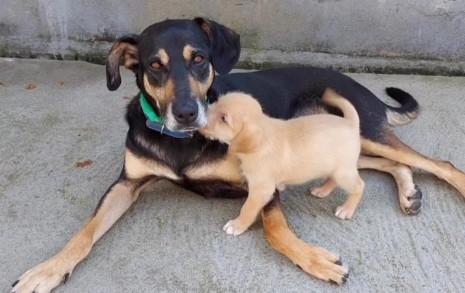
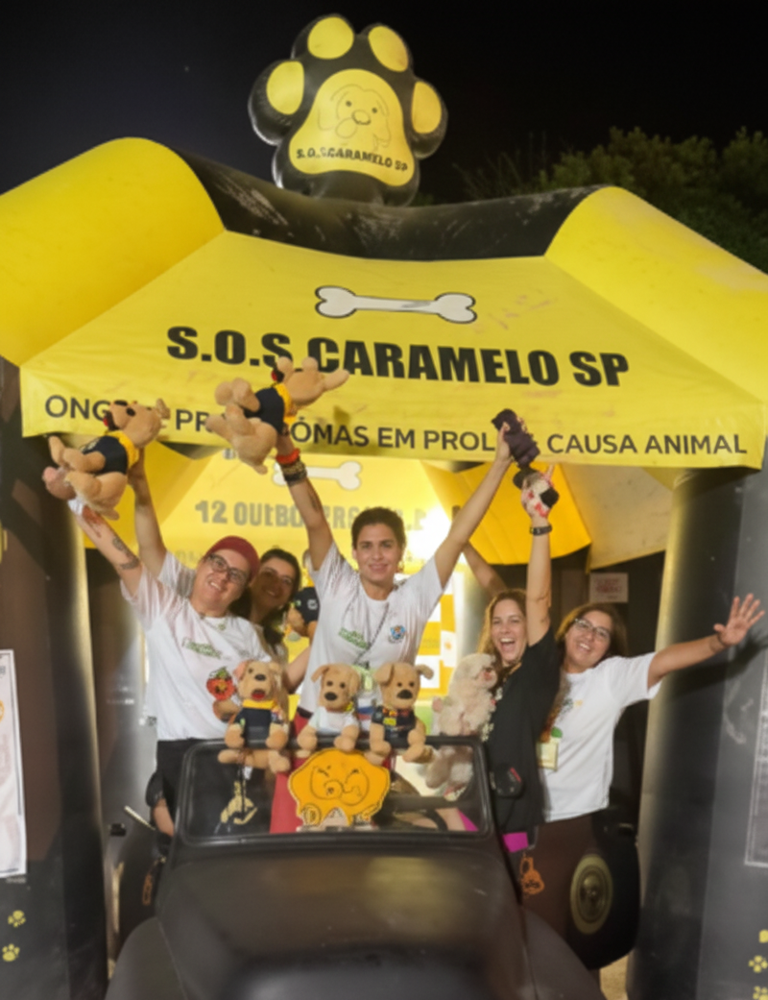
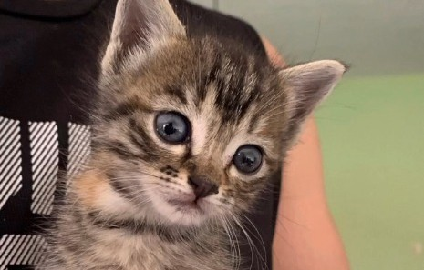
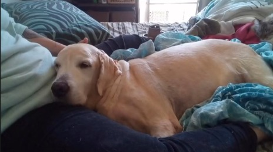
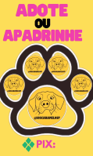
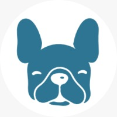
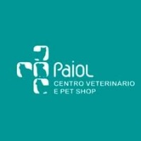
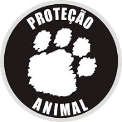

FAROFA
Idade: 12 anos
Farofa é uma cachorrinha doce que adora colo e brincadeiras. Ela sonha em encontrar uma família para chamar de sua.
A SOSCarameloSP nasceu da união de protetores independentes que já atuavam no resgate de animais em situação de risco em São Paulo. Hoje, como ONG estruturada, contamos com voluntários e parceiros para oferecer cuidados, acolhimento e adoção responsável a cães e gatos que precisam de um novo começo.


Idade: 12 anos
Farofa é uma cachorrinha doce que adora colo e brincadeiras. Ela sonha em encontrar uma família para chamar de sua.

Idade: 12 anos
Caquinho é uma gatinha curiosa e carinhosa que ama explorar e receber carinho. Ela procura um lar calmo e cheio de amor.

Idade: 12 anos
Caramelo é um cachorro alegre que conquista todos com seu jeitinho carinhoso. Ele só precisa mostrar todo o amor que tem para dar.

Nem sempre é possível adotar, mas você ainda pode transformar a vida de um animal resgatado. Ao se tornar padrinho, você ajuda diretamente nos cuidados, alimentação, medicamentos e bem-estar de um pet que ainda espera por um lar.
Como funciona:
Você realiza uma doação via PIX para contribuir com os cuidados do animal.
Envia o comprovante por e-mail para que possamos registrar sua ajuda e manter você informado sobre o pet que está apadrinhando.
Ser padrinho é oferecer amor e esperança mesmo à distância.
Junte-se a nós e faça a diferença na vida de um caramelo!


